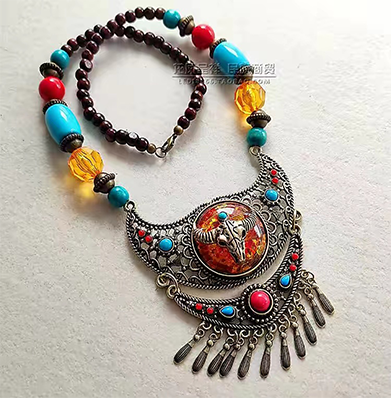
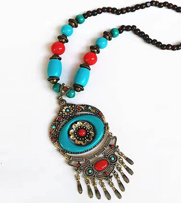
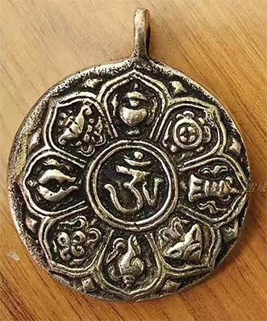

藏族佩饰图案内容丰富、形式多样、色彩艳丽、对比强烈，按其表现题材内容大致可以分为：
一、几何形纹饰，主要有圆形 、方形、菱形、“卍”字纹、 长城纹、回形纹、旋涡纹等。 它们或单独存在，或组合构成。 该图为菱形纹样。
一、几何形纹饰，主要有圆形 、方形、菱形、“卍”字纹、 长城纹、回形纹、旋涡纹等。 它们或单独存在，或组合构成。 该图为菱形纹样。
三、植物纹图案，有忍冬纹、 卷草纹、宝相花、缠枝花、牡 丹、梅、兰、竹、菊等。该图 为菊花纹。
四、自然天象纹，主要有水纹 、云纹、波浪纹、火焰纹、山 、石、日、月、星等。该图为 水波纹。
一、几何形纹饰，主要有圆形 、方形、菱形、“卍”字纹、 长城纹、回形纹、旋涡纹等。 它们或单独存在，或组合构成。 该图为菱形纹样。
一、几何形纹饰，主要有圆形 、方形、菱形、“卍”字纹、 长城纹、回形纹、旋涡纹等。 它们或单独存在，或组合构成。 该图为菱形纹样。
这些具有方折的力度感的花纹和圆润遒劲的金银佩饰雕刻纹样，洗练、简洁质朴，寓意生命长久无限，体现了藏族强有力的 精神风貌。藏族地处独特的地理环境使他们对现实生活更关注和对生命更渴求，这种强烈的生存心态使得他们较多的运用寿字纹 、回纹等吉祥装饰纹样，这是民间吉祥观念的世俗功利价值观的直接反映。藏饰图案是通过吐故纳新的历史演变而不断形成和发 展的，它是在藏族本土文化的基础上，融合、吸纳了外来文化如中原文化、蒙古文化、西亚文化等，可谓兼容并蓄、博采众长。

返回首页